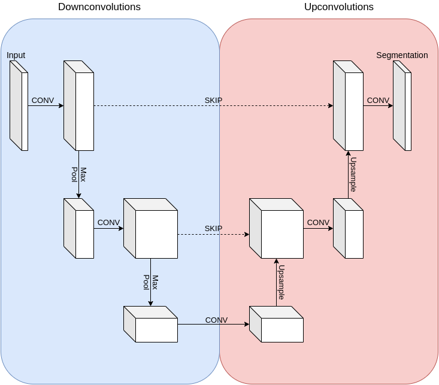

Volumetric Lung Tumor Segmentation
Automated detection in 3D CT Scans using PyTorch Lightning & U-Net
Project Overview
The Medical Challenge
Manual segmentation of lung nodules is a labor-intensive and subjective task for radiologists. A major difficulty lies in the severe class imbalance: a full-body CT scan contains hundreds of slices, but tumors may only appear in a tiny fraction of them.
This project is inspired from LungNet Architecture, a deep learning framework that translates 3D volumetric data into 2D slices for precise, pixel-wise tumor segmentation using a U-Net architecture.
Model Architecture
We utilize a classic U-Net architecture, the gold standard for biomedical image segmentation. It features a contracting encoder path to capture context and a symmetric expanding decoder path for precise localization.

Schematic representation of the U-Net implementation used in the project.
Encoder (Contracting Path)
Captures high-level semantic context using DoubleConv blocks (Conv2d -> ReLU -> Conv2d -> ReLU) followed by Max Pooling.
Decoder (Expanding Path)
Recovers spatial information using bilinear upsampling and skip connections that concatenate features from the encoder.
Data Processing Pipeline
Input: 3D NIfTI Volumes
Raw CT Scans (.nii.gz)
Z-Axis Clipping
Removing first 30 slices (abdomen/artifacts)
Normalization
Standardizing Hounsfield Units (Factor: 3071.0)
2D Slicing
Converting volumes to 256x256 .npy slices
Weighted Sampling
Over-sampling rare tumor slices to fix class imbalance
Augmentation
Affine & Elastic deformations via
imgaug
Output: Segmentation Mask
Pixel-wise tumor probability map
Technical Stack
Core Technologies
- PyTorch & Lightning: For modular model definition and training loops.
- NiBabel: For handling NIfTI medical imaging formats.
- ImgAug: For robust medical image augmentation.
- OpenCV: For image resizing and post-processing.
Current Status
The pipeline for data ingestion, preprocessing, and model definition is fully implemented.
Next Steps: Running full training jobs on GPU, tuning hyperparameters (learning rate, batch size), and generating qualitative segmentation results on test patients.